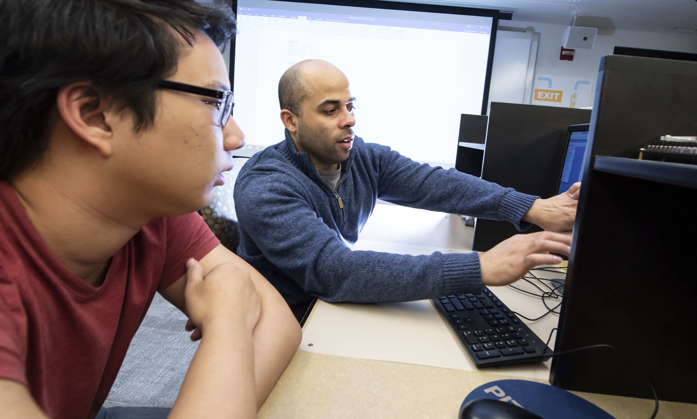
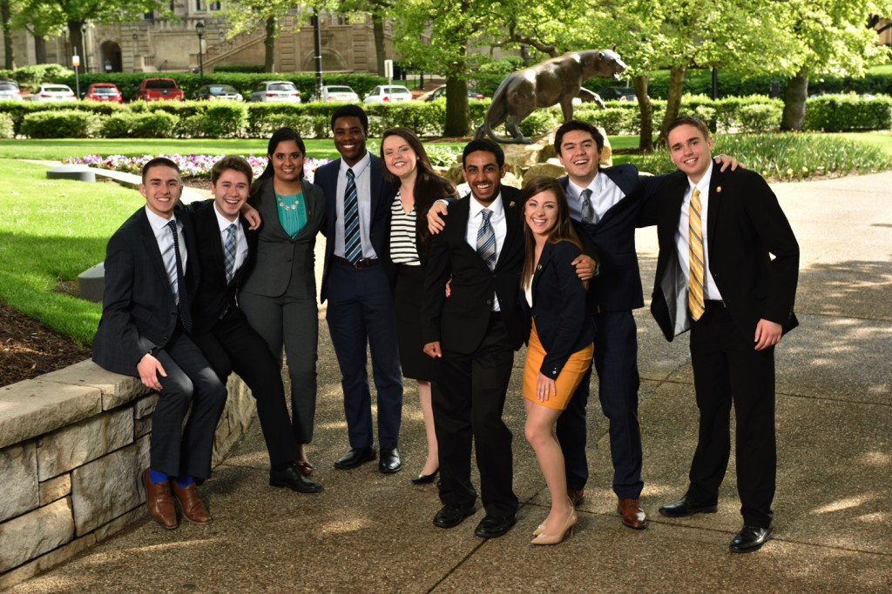
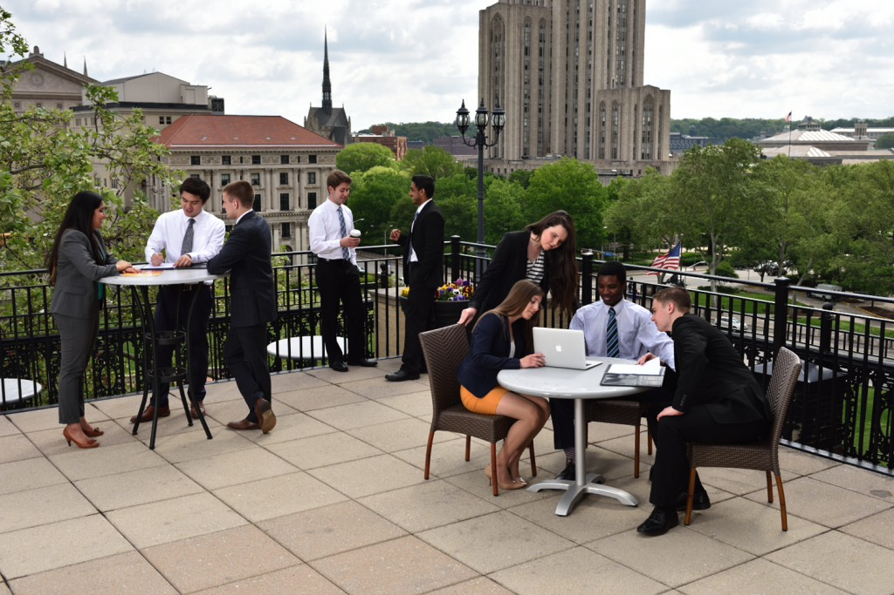

Hi! My name is Ria Chadha, and my goal was to create a documentary where my audience could watch as new mastana members navigates through the highs and lows of being on the University of Pittsburgh's premiere bollywood fusion dance team.

Role
I was the sole creator of the entire documentary - from filming the content you see on the screen, to editing the sound, footage, and special effects - I scripted and developed the project into what it is now.

Impact
Ultimately, I had full control over which direction the material went in. My goal was to limit my video to 15 - 30 minutes long. I wanted to portray as much emotion about the team as possible. I feel that often, when you discuss emotions, you spend more time trying to understand it rather than feeling it – the meaning can get lost in the explanation. This is the primary reasoning behind why I think most would want to choose a shorter video to send out their message. However, the emotions I am trying to show are not fleeting – and especially for those who might not have any idea what being on a dance team entails – there's going to need to be context. I decided to start with a broad overview of what the organization I was covering was. Then, through interviews and behind-the-scenes clips, as well as emotional music and rapid cutscenes, I began to show the audience a heavier side to the team, which was the reason I wanted to make the video longer.

Moving Forward
I learned that making a documentary is no simple process. While I had a lot of material and content to present, I realized that you need to be able to package every minute of it in a way so that the audience is being given something new to look at. As the only developer on this project, I was quite a task, and I feel that there are many areas of this film where I could improve. I did feel, however, that I was better able to understand how to convey emotions through a screen. Every visual element plays a role, no matter how big or small, in making the audience take away a thought or feeling. In my future career (marketing and video design) based on audience reactions and my own experience with editing this video, I think I will be able to connect with my viewers a little easier, and be able to understand how to market content in a way to get the most reaction possible.